עברית קודם כול
מימין לשמאל בכל מסך, עם בדיקת איות.
חינם בתקופת הבטא. ההצטרפות בהזמנה. איך מתקינים
מקום שקט לכתוב בו תסריט.
נכתבה על ידי תסריטאים. התסריט מ־Word בא איתך.

הכתיבה
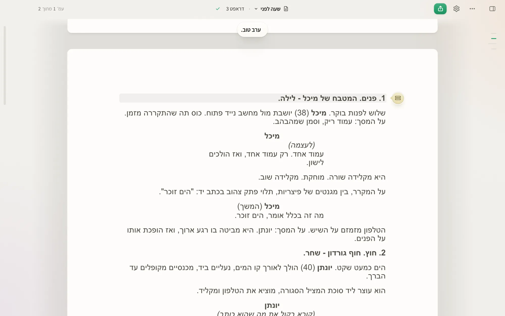
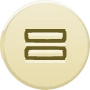
סמן השורהמתחלף לבד לפי השורה.
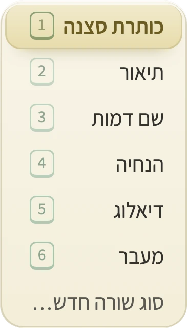
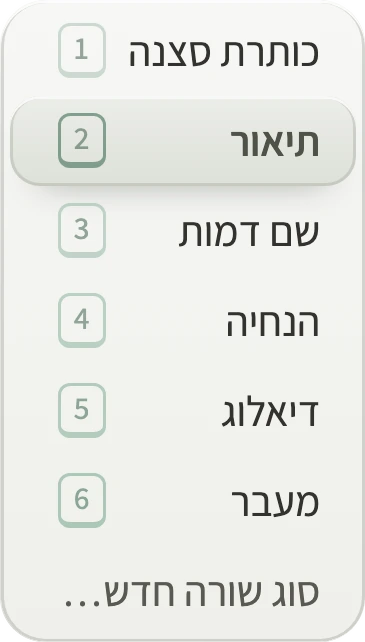
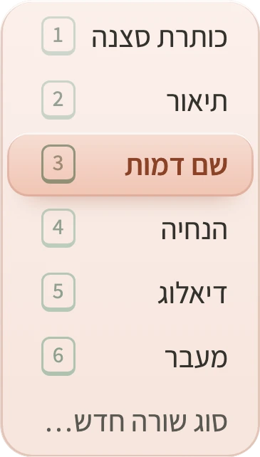
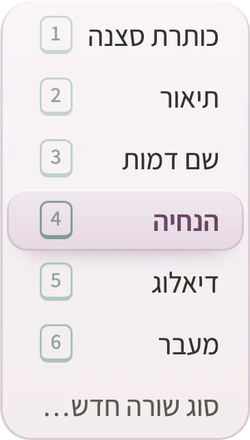
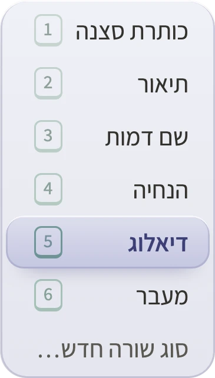
לחיצה משנה סוגכל סוג עם המספר שלו.

עוברים בלי לאבד כלום
גוררים את הקובץ פנימה, והתוכנה מזהה לבד כותרת סצנה, דמות ודיאלוג.


מבלגן לסדר
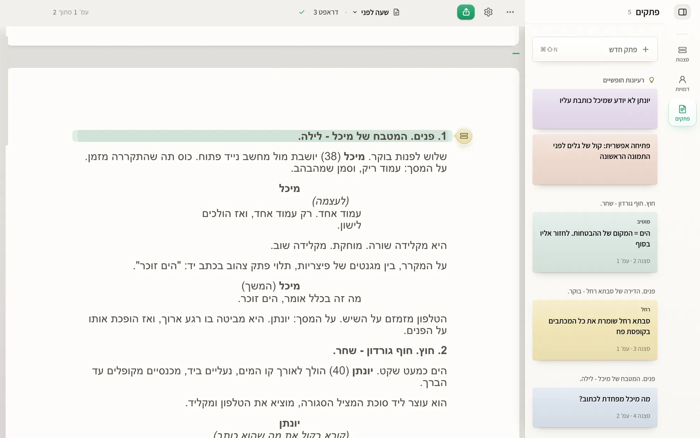
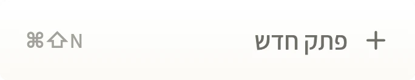
פתק חדשבקיצור מקלדת, בלי לעזוב את השורה.
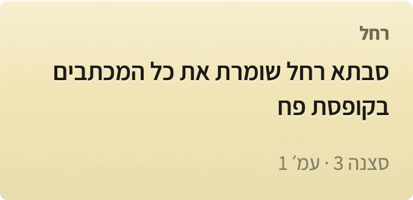
פתק של סצנהלחיצה מחזירה לסצנה ולעמוד שכתובים עליו.
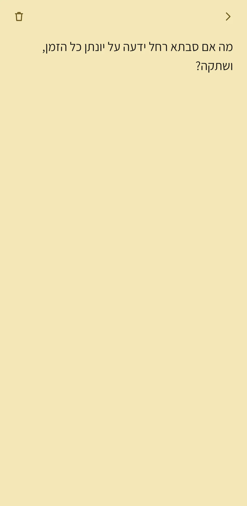
רעיון מהטלפוןנכתב בדרך, מחכה בתסריט.
מסדרים את השלד של הסיפור.
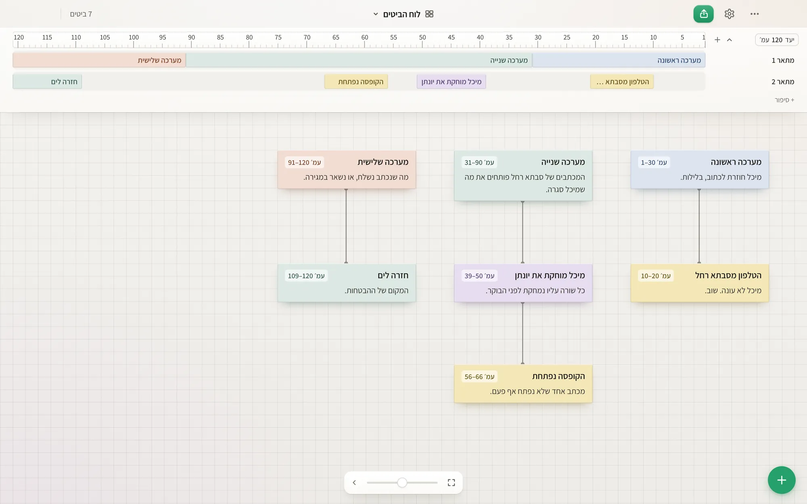
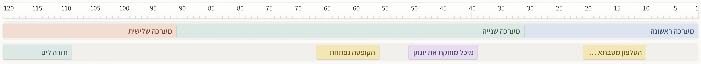
הסרגל והמערכותהאורך של כל מערכה, בעמודים.
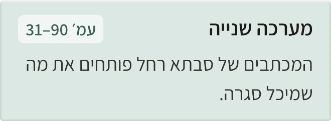
כרטיס לכל ביטכותרת, שורה, עמודים.
כל דמות, וכל מה שיודעים עליה.
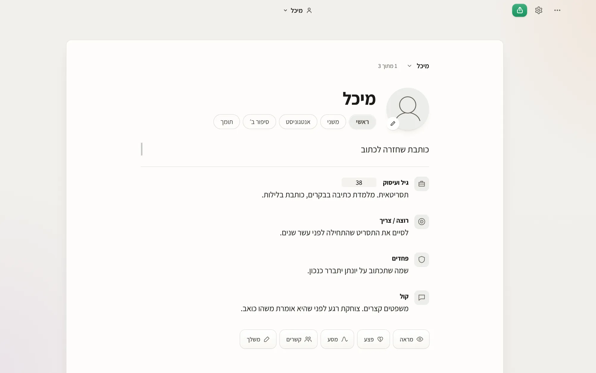
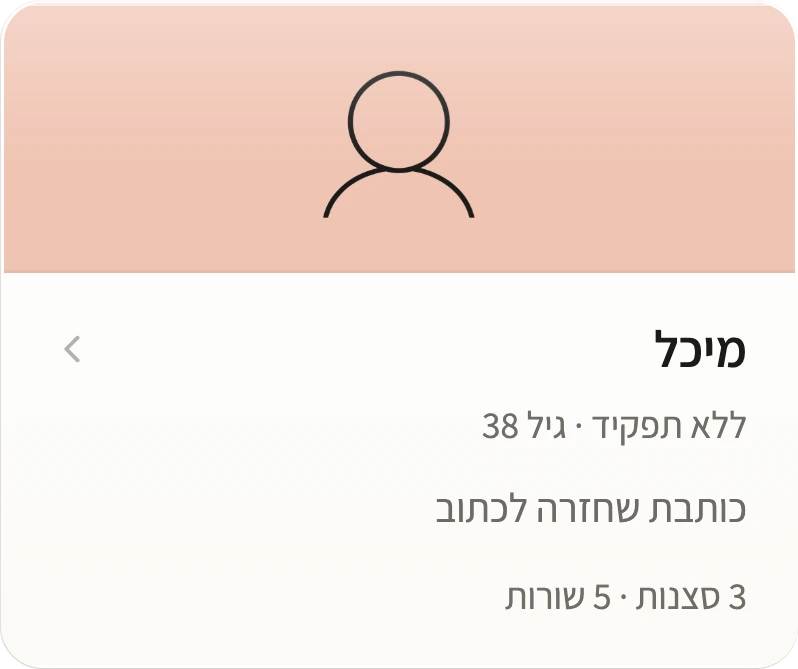
הדמויות נאספות לבדסצנות ושורות לכל אחת.
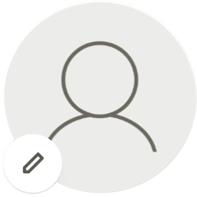
דף לכל דמותשם, תפקיד, משפט אחד.
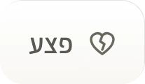
רק מה שעוזרמוסיפים חלק כשצריך.

מימין לשמאל בכל מסך, עם בדיקת איות.
מה שעל המסך הוא מה שיודפס.
עם עמוד שער ומספרי סצנות.
לפני הגרסה בתשלום תהיה תקופת ניסיון, ונודיע מראש.

וונדר חתומה ומאושרת על ידי Apple, ולכן לא אמורה להופיע שום אזהרה:
אם בכל זאת מופיעה הודעה, כתבו לנו ונעזור.
גרסת ה־Windows מגיעה דרך חנות Microsoft Store: התקנה בלחיצה אחת, כמו כל אפליקציה אחרת מהחנות.
אחרי ההרשמה מגיעים לעמוד ההורדה, ושם כפתור אחד פותח את וונדר בחנות. לוחצים על "התקנה" ופותחים אותה מתפריט התחל.
התסריטים נשמרים אצלך במחשב, בתיקייה שבחרת, ואין צורך בחשבון או בהתחברות. תסריט יוצא מהמחשב רק כשאתה בוחר בכך במפורש, למשל כששולחים אותו לקריאה או מבקשים תרגום.
פעם ביום התוכנה בודקת אם יש גרסה חדשה. הבדיקה לא שולחת שום דבר מהתסריטים. הפרטים המלאים במדיניות הפרטיות.
כל פרויקט הוא קובץ אחד עם הסיומת .wonder, שמחזיק את התסריטים, הטיוטות, הדמויות והפתקים. אפשר להעתיק אותו, לגבות אותו ולשלוח אותו כמו כל קובץ.
וכדי שלעולם לא תהיו תלויים בנו: ייצוא ל־PDF ול־Word זמין תמיד.
כן. גוררים קובץ .fdx לתוך וונדר, או בוחרים ״פתח תסריט קיים…״. סוגי השורות, הדיאלוג הכפול, עמוד השער וה־ScriptNotes עוברים איתו. גם קובצי Fountain נפתחים, ואפשר תמיד לייצא בחזרה ל־.fdx.
Mac עם macOS 11 ומעלה, גם עם מעבד Apple וגם עם Intel. Windows 10 ו־11, 64 ביט. לא צריך חיבור לאינטרנט כדי לכתוב.
כותבים לנו ל־support@wonder-pages.com ומקבלים תשובה בעברית. את התשובות כותב עוזר אוטומטי (בינה מלאכותית), ומה שדורש אדם עובר אל אמיר קיפר, מפעיל וונדר. אם אפשר, צרפו צילום מסך ואת מספר הגרסה.